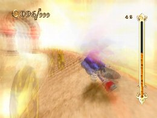
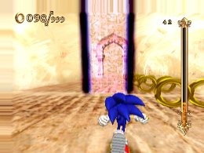
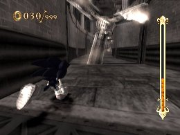
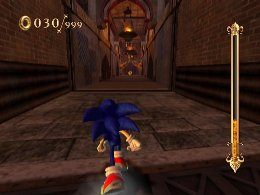

Using Time Break and Speed Break
Advanced Strategies
Both Speed Break and Time Break can be cancelled by pressing the same button again while they are active. If you use this cancel effectively, you can widen your options.
For Speed Break in particular, you don’t want to run into an indestructible obstacle or run out of space to run and fall, and there are only a limited number of areas where you can use up the entire Soul Gauge before one of those two things happens. Thus, canceling becomes very important.

The best timing to cancel will depend on the structure of the stage, but one thing to keep in mind is to try to cancel when there is still enough energy left in the Soul Gauge to pull off another Time Break or Speed Break. By retaining this energy, you can keep your options open to deal with unexpected situations as you work your way through the stage.

Super Play
SAND OASIS
Special Challenge Break 5 Jars!
Use Speed Break to smash all the pots at once.
« Canceling Actions | Advanced Strategies | Things to watch out for when using Speed Break and Time Break »
 RSS
RSS